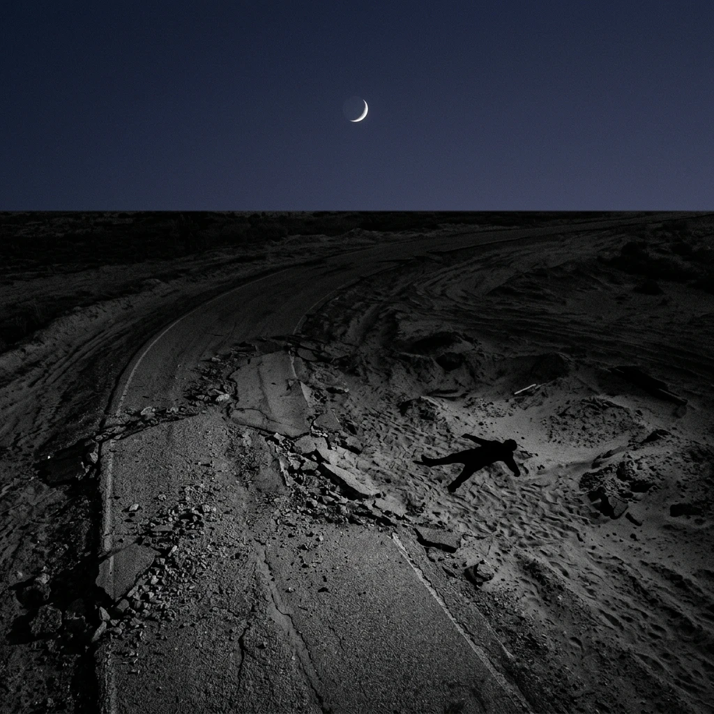
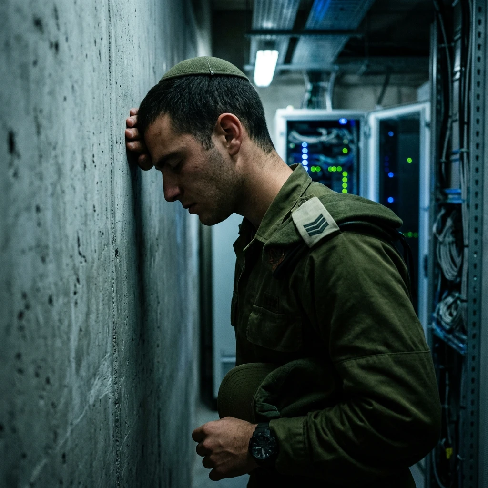
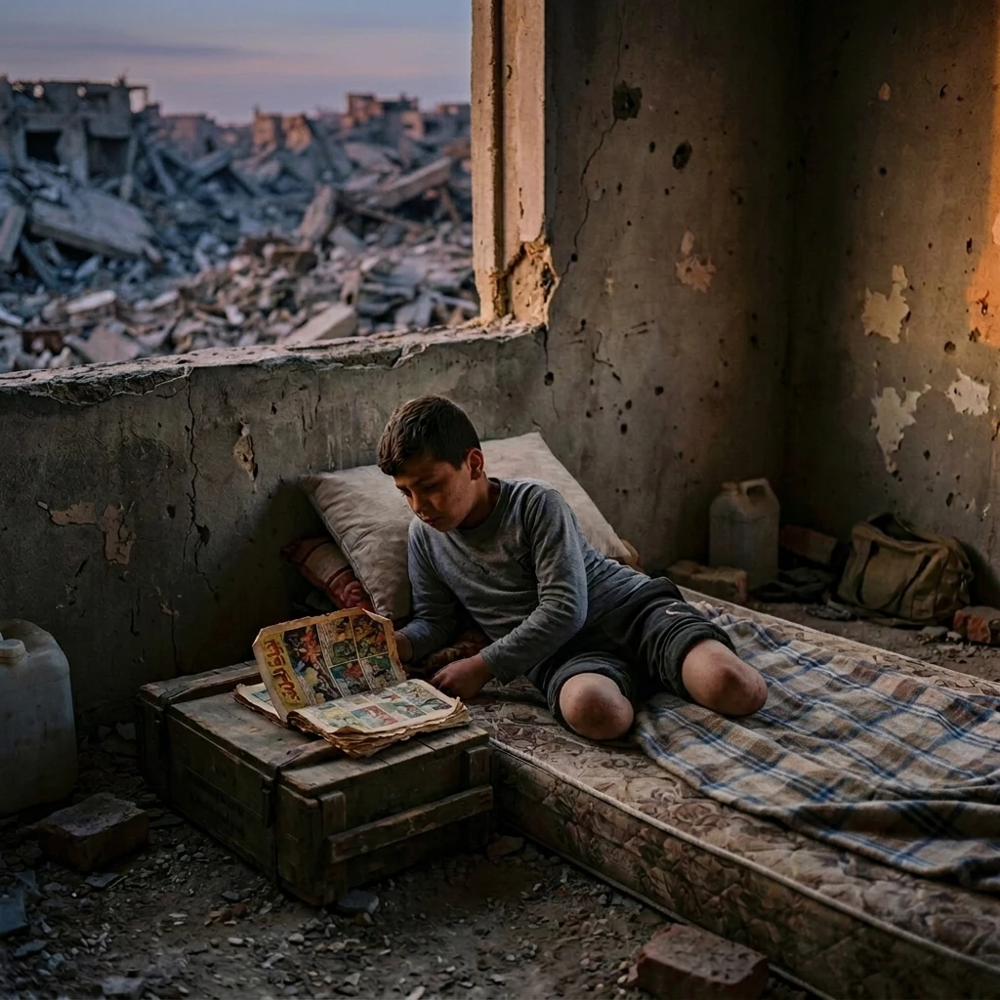
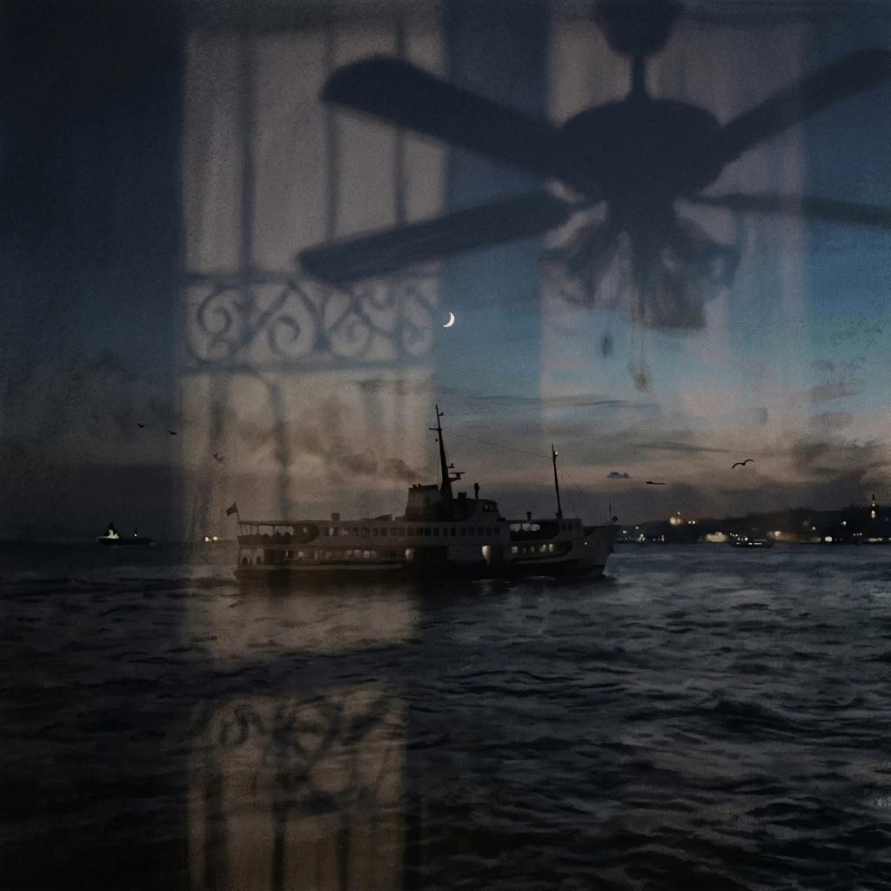
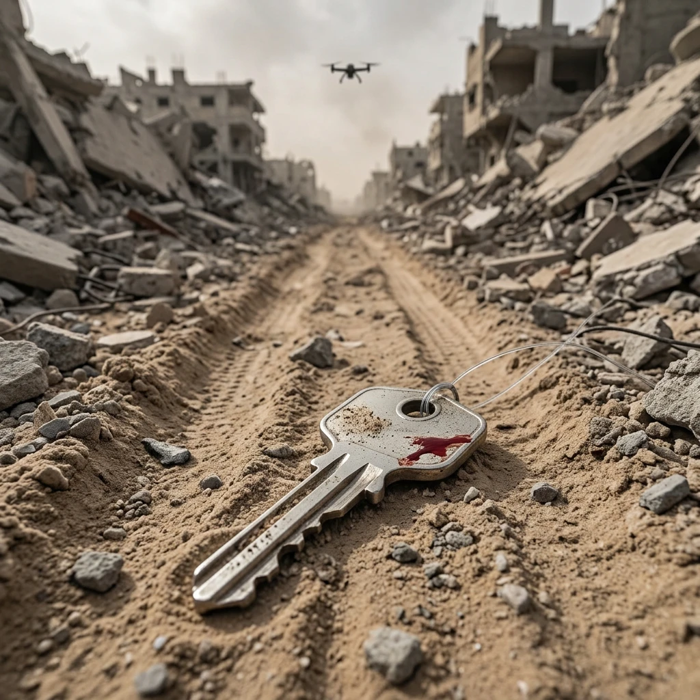

+0 — more blood in the sand
The drone shot the child in the forehead and then moved on.
Above the heaps of grey rubble, a few witnesses crouched, in dusty rags, trembling. The crumpled roadway, which they had abandoned, a bleak strip of grey sand bordered by destroyed buildings, began to absorb fresh blood. The child draining slowly, motionless, knees slung up, arm flung, hair fringed with spattered brain. Above all, a new moon rising in a pristine early evening sky, low on the horizon glowing peacefully. A whir of propellors, a shriek of high-pitched torsion and the killer drone vanished.
Far away in Haifa, at a console after clicking approve, a staff lieutenant in the IDF intelligence services autonomous Lavender human-in-the-loop branch sighed and swiveled away from his screen. Sad pouches of palpable pain prickling across youthful jowls, a tight scowl worn as protection. The room was hushed, quiet conversations restrained. Operators locked in hunched over their screens, clicking through target request analysis approval sequences, rapidly as if typing. Median kill approval time: 15-45s.

+1 — kill chain confirmation
He swiveled back. The screen had already reset; a corner thumbnail lingered, auto-archived: figure splayed in sand, knees up, arm out, dark bloom widening from the head. Strike 4,102 of the rotation. The folder that keeps them has a name he has never typed and a count he has never opened. He rarely even looks at the photos now. Requests arrive as cascade. Twelve pending. Fifteen. The queue does not grieve; the queue refills.
The machine is trusted as one trusts a river. Nobody audits a river. You build on its banks, you drink, you name your children after it, and when it floods you call the flood weather. A machine of life and death, mostly death, its current fed by every antenna on the coastal plain, and he a sluice gate, opening, opening, opening, at a median of fifteen to forty-five seconds per opening.
He came up through Unit 8200 — Intelligence Corps, clandestine operation, signal intelligence, code decryption — recruited at seventeen for pattern-hunger, for sitting still. The unit is spoken of the way rich families are spoken of. Alumni run companies whose names mean unicorn. What the unit actually collects is proximity: who sleeps beside whom, which phone charges beside which phone, which identifier walks to which mosque at which hour, the whole strip rendered as a nervous system with every synapse tapped. Lavender drinks from that. Lavender scores. Humans confirm. Confirm is a word for what his finger does.
Somewhere in the building, he has been told, there are rooms that model the whole enterprise honestly: territory as gland, border as membrane, the state an endocrine loop dosing itself — cortisol at the fence line, adrenaline in the operations pit, threat detected, threat annihilated, threat detected, the survival circuit of an organism that has confused killing with breathing. Egocentric, the textbook would say, survival-focused. The textbook would not say death drive.
Fifteen pending. He clicks. A senior officer, week one: 'your hesitation is a luxury'. He no longer remembers hesitating. He remembers today's thumbnail. Knees up. Arm flung, as if pointing off-screen.
He files for bathroom break, stands in the corridor, presses forehead to cool wall. Under the eyelids: sand, bloom, arm. Shift ends 22:00. The corridor hums at the frequency of servers, a frequency compounded pulsating.

−2 — WCNSF – wounded child, no surviving family
Three days earlier, the room.
One room, third of a house, the standing third. Mattress by the wall where damp made maps of continents neither of them would visit. Qais on the mattress, eleven, long-lashed, furious in the mornings, gentle by noon, legs ending above where knees had been. January took the legs. January took more than the legs. Parents. An aching sad spasm. Don't look.
At night phantom feet itched and she scratched air above the blanket in slow circles until he slept.
Her ritual grind. Water at the northern queue, two hours, sometimes fire, sometimes not. Bread where bread rumored itself. Thursday, clinic, the hour of charge, nurse Hanan's radio murmuring casualties like a tide table. Music! Between stations she moved by a private map: which streets the sky disliked, which walls threw shade at which hours, where a drone had loitered Tuesday and might have habits. She was seven, with habits of a forty-year-old smuggler. She forgot, skipped, sometimes, over safe stretches.
Feed him. Wash him where he allowed. Empty the pan he hated needing. Recite the outside: today grey, today crows, today two dogs fighting over something we will not name, today a man crying into a wall as if the wall were his father. Qais collected her reports and rebuilt the city from them behind closed eyes, streets restored, bakery re-lit, everyone's legs re-attached, and gave her the city back at night in installments, a serial, their one channel.
Promises were currency and she minted them carefully. The sea, she promised. When you're strong enough to be carried, Abu Ramzi's cart, the sea, we'll dip your hands in, both hands, salt stings and then it doesn't. He said the sea was gone too. She said the sea can't be hit, it just closes over and continues, and he thought about that until his face untied itself.
Two notes, low then high, always, from the pharmacy corner. So he'd know. Other steps stopped his breath; hers released it. The whistle was the door of the room that had no door.
Thursday she charged the phone and Hanan gave the hour's news in three sentences and none were news. Friday the sugar. Saturday she woke before him, watched his chest lift and drop, counted it awhile, the way misers count.
Sunday the jug was low by evening. She weighed the light. An hour, maybe less, before true dark. She kissed his hairline, pursed lips at him — silent rehearsal of two notes — and went out for water.
+2 — love’s flailing compensation torrent
Off shift, 22:04, calm, smiling thin, mind numb, an industrious yearning.
Collapse. His phone. The feed dissects reluctance. Sports first. Music on. Then looping back, a suave consoling spokesman, followed by a pretty pert sad girl in pressed olive, explaining cohesion, precision, necessity. Enemy, alertness. Graphics: red icon, yellow radius, the word OPERATIVE floating serif over a rooftop. A thread, 214 replies, proving with arrows that the footage everyone saw was staged, lit, acted, that the child — a child in general, any child, the category child — is a prop.
Every day somewhere, a general or a new parent or a chemist repeats the most moral army in the world slogan; the phrase even scrolls under a mattress ad. Counter-feed: same road, other angle, someone's uncle screaming vertically into a lens. He thumbs past. Thumb knows. The torrent is not designed to convince. It is designed to exhaust, to silt the image over, layer on layer of pixel sediment until sand, bloom, limb, lie buried under commentary, and by 01:00 the burial mostly works, mostly, the arm still points through.
Friday, Tel Aviv, rooftop off Allenby. Bass first, then stairwell heat, then three hundred bodies under strings of bulbs, sea invisible but present, salting the air the way the unspoken salts a family dinner. Roi from the unit presses a neon yellow emoji-pill into his palm like a communion he isn't cleared to refuse. Forty minutes later an MDMA bloom arrives all at once, serotonin flung open, and he loves — genuinely, wetly, in every direction — the dancers, the bulbs, the bass, the bartender's shaved head glowing like a moon low over broken skyline
no
like a bulb. Like a bulb.
Dance without target, sweat without score. Churning the chaos. Beautiful youthful flailing forms: conscripts, analysts, coders, a girl from air defense with glitter at her clavicle shouting some lyric at the sky, all of them chemically unlocked and grieving nothing, or everything, indistinguishable at this dosage. National gland at Friday discharge. Cortisol all week at the fence; MDMA at the weekend membrane; the organism dosing itself both directions, survival circuit humming, and inside his loosened skull one thought surfaces face-down and slowly turns face-up the way bodies do in water:
knees up. Arm flung. Pointing. Another pill.
He dances harder. Amnesia. The bass agrees to carry him till four.
−3 — before the disasters
January, backwards.
The night the building folded she was asleep between her parents, which is why she lived: their bodies made the arch that the slab respected. Sound is not the memory. The memory is dust with a taste, and being passed upward hand to hand through a gap the width of a jug, and a stranger's heartbeat against her ear going too fast, and asking the dark for her mother in a voice she heard as someone else's. Qais they cut free at dawn. What the slab wanted of him it kept. Parents stayed. The building became their marker, one more grey heap in a city of markers, and the twine with the key went around her neck at the burial that wasn't one, tied there by an aunt who was dead herself by March, completing the arithmetic: two children, no relatives, one room, one door-less door.
Further back. October, before everything, morning.
Flour on mother's wrists and on the radio's dial, dough slapped in rhythm to a song about a girl from Jaffa. Father on the balcony with tea and the phone, his one luxury, photographing light on water tanks as if water tanks were herons. Qais downstairs already, football against the cistern wall, thump, thump, the whole street his. School bag by the door with a broken zip mother swore weekly to mend. On the corniche that evening the wind came off the sea so hard it made her dress a sail and mother laughed and grabbed her hand and they leaned into it together, two kites testing one string, and father raised the phone —
Stand still, habibti. No — laugh again. Laugh again.
Click.
Seven years old, gap-toothed, squinting into sun. The sea behind her closing over every stone thrown at it, and continuing.

+3 — a genocide rooted into night
Saturday night, Noa's flat, Florentin. Ceiling fan stirring heat without subtracting it.
Noa serves too — imagery analyst, other building, same river. They never discuss work; they discuss around work, the way one walks around a hole in a floor so habitually the walking becomes the floor. She knows his week by his jaw. Tonight jaw wrong, eyes wrong, hands too deliberate, and she pulls him down anyway, or he pulls her, initiation lost to the general subsidence of two exhausted bodies agreeing on the one language left.
It starts as tenderness and curdles. Somewhere in the rhythm the rage arrives, punctual as a queue refilling — grief with nowhere lawful to go, and it goes here, into grip, into force she answers with force, both of them fluent in this dialect too. And under his closed eyes the pit floods in: he wants to open everything, both of them, split, unstitched, matched at last to the outside of the world — torn apart, butchered, splayed out in sand, knees up, arm flung — his own hands monstrous to him at the exact moment they tighten, her breath ragged against his ear saying his name, name repeated, name like a whistle in a ruined street that nobody will answer, and he is fucking and mourning and cannot tell which motion is which, an operator of a body, approving, approving,
then orgasm takes him apart with the specific mercy of execution. Thoughtless. Metaphorically dead: the phrase would please him if phrases survived, but nothing survives up here, the console dark, the queue empty, breath decelerating toward the median of sleep.
Noa watches the fan. Her thumb moves on his shoulder blade, wiper-blade arc, clearing nothing.
Underneath, where he cannot supervise it, the dream assembles: Haifa at dusk, a ferry with no flag, deck crowded with silent passengers facing seaward, no Hebrew, no Arabic, no announcement, water black and endlessly absorbent, the coastline shrinking to a strip of grey sand bordered by buildings, and he cannot tell, from the deck, whether he is escaping the hatred or exporting it, whether the ferry is leaving Israel or Israel is leaving him, and in the dream-soil under the dream a word is germinating that he did not plant. It came in through the eyes. Hers. Dead, open, seven years old, unclosable by any thumb. The word has taken root, unavoidably: genocide, growing downward first, the way roots do.
On the road it is night now. New moon higher, thinner, a debt the sky still owes. Witnesses gone. Sand drinking, patient. Two figures splayed under one sky: one draining, one drained. One waited for by a two-note whistle that is still, in a room without a door, being listened for.
